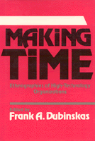

Four ethnographic studies of the social and cultural construction of time
Four ethnographic studies of the social and cultural construction of time


 Four ethnographic studies of the social and cultural construction of time
Four ethnographic studies of the social and cultural construction of time

|  |
Making TimeEthnographies of High-Technology Organizationsedited by Frank A. Dubinskascloth EAN: 978-0-87722-535-5 (ISBN: 0-87722-535-4) |
Time is a fundamental symbolic category for understanding the orderliness of social life. This volume presents four field-based ethnographic studies of the social and cultural construction of time in modern high-technology organizations. They show how time and the constitution of scientific and technical knowledge are intimately linked. The essays describe and analyze differences in the ways knowledge bases and technical expertise are built in high-energy physics laboratories, hospital radiology departments, solar energy cell design jacket, and start-up biotechnology firms. They illuminate the central roles of time in these construction processes.
The multiple patterns for making and interpreting time in these scientific, technical, medical, and managerial communities challenges the common Western assumption of cultural uniformity in modern science. "Time" is and means different things in each of these high-technology environments. The essays also examine the special role of technical artifacts like machines as central symbolic nexus in the social relations of constructing time. Machines and their management are crucial to the interactions within each community. They shape the temporal, technical, and scientific character of professional work; they mediate and articulate collaborations between technical groups; and they provide a focus for intra- and extra-group conflict around their use.
By eliciting and interpreting the diversity of times in advanced technological environments, these studies break new ground in the ethnography of science and technology and the sociology of knowledge. At the same time, they provide detailed examples and insight into vexing issues in the management of advanced scientific and high-technology organizations.
1. Cultural Constructions: The Many Faces of Time – Frank A. Dubinskas
2. Discovering Machines: Nature in the Age of Its Mechanical Reproduction – Sharon Traweek
3. Engineering Design Process – Louis L. Bucciarelli
4. On Technology Time and Social Order: Technically Induced Change in the Temporal Organization of Radiological Work – Stephen R. Barley
5. Janus Organizations: Scientists and Managers in Genetic Engineering Firms – Frank A. Dubinskas
Frank A. Dubinskas is Assistant Professor of Organization Studies in the School of Management at Boston College.
Contributors: Sharon Traweek, Louis L. Bucciarelli, Stephen R. Barley, and the editor.
© 2015 Temple University. All Rights Reserved. This page: http://www.temple.edu/tempress/titles/457_reg.html.